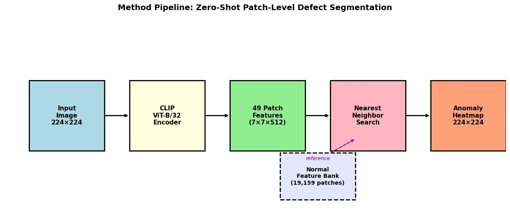
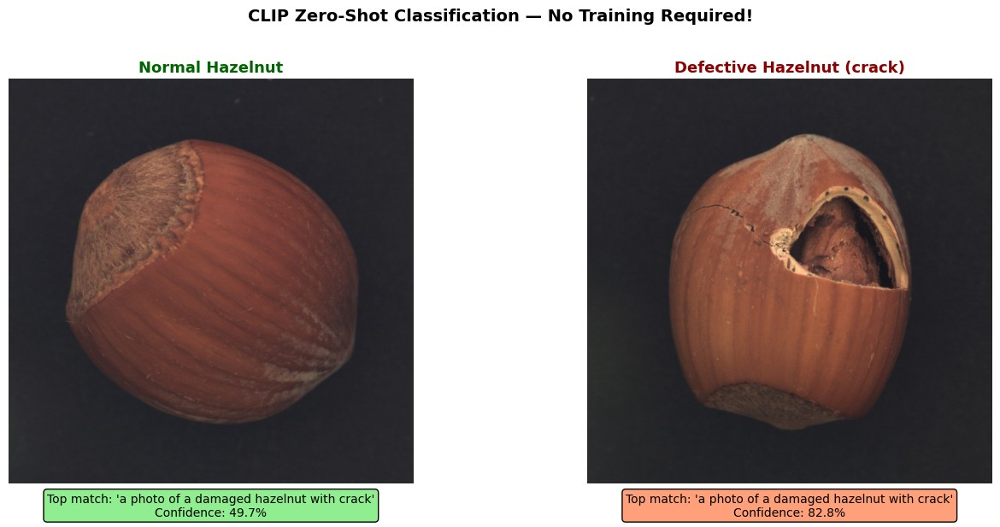
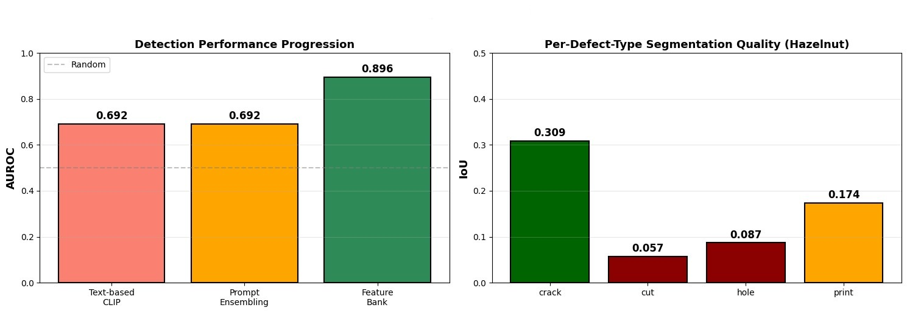
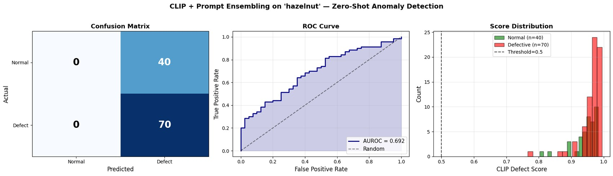
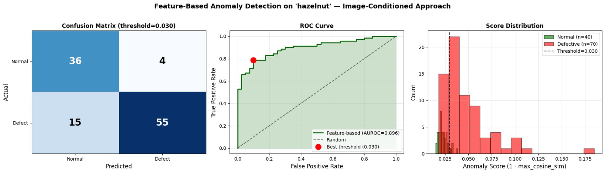
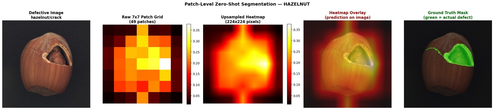
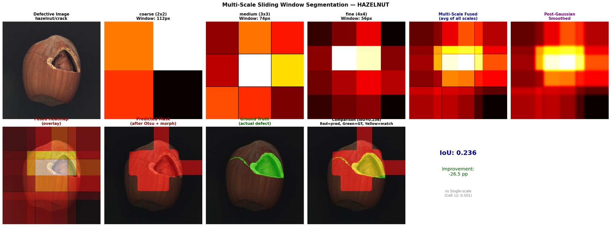
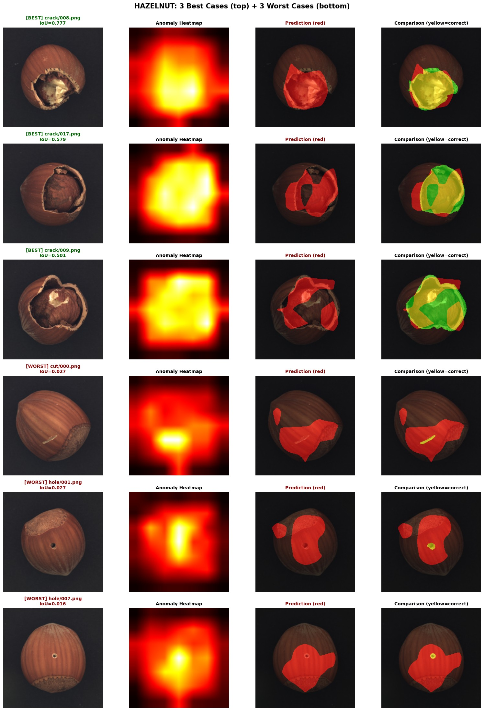

Frozen Vision-Language Model (CLIP ViT-B/32) & Memory Banks

Plain English Explanation
We tested whether an AI trained on hundreds of millions of internet photos (OpenAI CLIP) can find factory defects on an assembly line without any training. When we asked it in English ("Is this hazelnut damaged?"), it failed catastrophically: it flagged 100% of normal, perfect nuts as defective because in the real world, natural objects never look 100% pristine.
However, when we removed text prompts and instead compared test nuts directly against a digital photo gallery of 391 verified normal nuts, detection accuracy jumped from 63% to 83% and AUROC soared to 89.6%! Extending this to 19,159 small image patches allowed the AI to pinpoint cracked shells with precision.
Technical Deep Dive
- Text Prompt Collapse: Hand-crafted prompts and 8+8 ensembled templates yielded 100% recall but 0% specificity (all 110 images predicted defective, AUROC 0.692). Web-scale text priors associate natural texture variations with damage.
- Global Normal Memory Bank: Storing 391 unit vectors (512-dim) and computing $s(x) = 1 - \max_j \langle f(x), m_j angle$ achieved AUROC 0.896 (+20.4 pp), F1 0.853, precision 93.2%, and recall 78.6%.
- Patch-Level Token Memory Bank: Running ViT-B/32 patch embeddings produced a 7×7 grid (49 tokens per image), compiling a 19,159-token reference bank $B$. Pixel-level anomaly heatmaps localized cracks with IoU 0.309 (peak 0.777).
- Multi-Scale Sliding Window Failure: Fusing coarse (2×2), medium (3×3), and fine (4×4) window scales dropped crack IoU from 0.501 to 0.236, proving naive multi-scale averaging blurs discriminative signals.







import torch
import torch.nn.functional as F
def extract_patch_tokens(clip_model, image_tensor):
# Manually run visual transformer to preserve 7x7 patch tokens
x = clip_model.visual.conv1(image_tensor) # [B, 768, 7, 7]
x = x.reshape(x.shape[0], x.shape[1], -1).permute(0, 2, 1) # [B, 49, 768]
# Append class token and add positional embeddings
cls_token = clip_model.visual.class_embedding.to(x.dtype)
cls_tokens = cls_token.expand(x.shape[0], 1, -1)
x = torch.cat([cls_tokens, x], dim=1)
x = x + clip_model.visual.positional_embedding.to(x.dtype)
x = clip_model.visual.ln_pre(x)
# Pass through 12-layer transformer
x = x.permute(1, 0, 2) # NLD -> LND
x = clip_model.visual.transformer(x)
x = x.permute(1, 0, 2) # LND -> NLD
# Discard class token, extract 49 patch tokens, project to 512-dim joint space
patch_tokens = x[:, 1:, :] # [B, 49, 768]
patch_features = clip_model.visual.ln_post(patch_tokens)
patch_features = patch_features @ clip_model.visual.proj
return F.normalize(patch_features, p=2, dim=-1) # [B, 49, 512]
def compute_patch_anomaly_map(test_patches, normal_patch_bank):
# test_patches: [49, 512], normal_patch_bank: [19159, 512]
sims = torch.mm(test_patches, normal_patch_bank.T) # [49, 19159]
max_sim, _ = torch.max(sims, dim=1) # Nearest neighbor in bank
anomaly_scores = 1.0 - max_sim # Distance to normality
return anomaly_scores.reshape(7, 7)